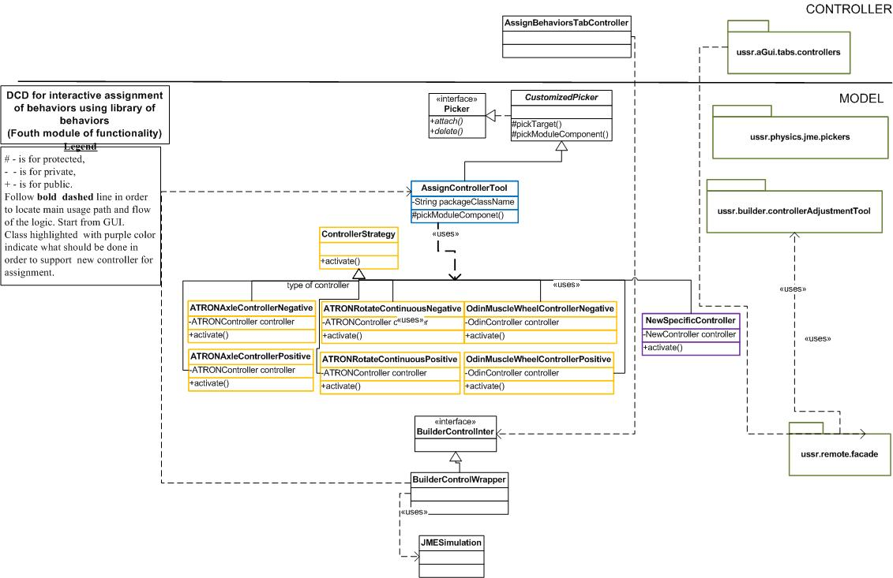

Supports the builder with interactive assignment of controllers to modules selected in
the simulation environment. Look in class called "AssignControllerTool.java".
PRECONDITIONS.
- Your new controller should be located in this package, otherwise it won't work.
- The name of the class defining controller should contain the name of modular robot it is implemented for.
For instance: for ATRON it is
ATRONRotateContinuousNegative.java
HOW TO ...?
Add my own controller class?
- Create new class and inherit it from "ControllerStrategy.java".
- Implement the method called "activate()", which is the main method of your controller.
Look other classes for inspiration and DCD beneath, were the class highlighted with purple
color is your new controller.
